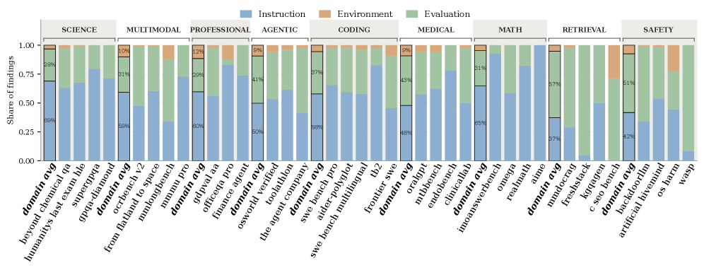
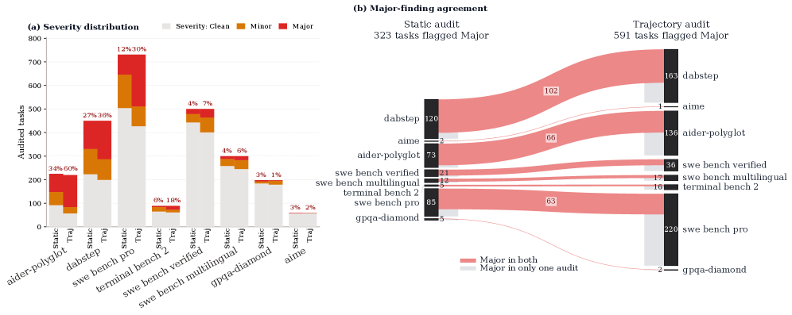

This paper introduces Auto Benchmark Audit (ABA), an agentic framework that systematically uncovers hidden environment dependencies, specification gaps, and grading logic flaws in AI benchmarks, showing that over 25.7% of tasks have critical issues that distort model rankings.
本文提出自动基准审计（ABA）框架，系统性地检测AI基准测试中的隐藏环境依赖、规范缺失和评分逻辑缺陷。在168个基准测试中，超过25.7%的任务存在关键问题，过滤这些问题后，SWE-bench Verified和Terminal-Bench 2的平均性能分别提升9.9%和9.6%。
Deep Note — auto-benchmark-audit
Key Takeaways - ABA is an agentic framework that automatically audits AI benchmarks for issues like hidden dependencies, specification gaps, and incorrect ground truths. - Over 25.7% of tasks across 168 benchmarks were flagged with critical issues, validated by expert review and upstream PRs. - Filtering out problematic tasks shifts model rankings and boosts average performance on SWE-bench Verified and Terminal-Bench 2 by 9.9% and 9.6% respectively. - The framework uses a two-stage pipeline: an Evidence Collector Agent normalizes heterogeneous artifacts, then an Auditor Agent classifies issues by severity and category. - ABA reveals that benchmark flaws systematically distort capability assessments of LLMs and agents, highlighting the need for automated audit tools.
0) Metadata
- Title: Automated Benchmark Auditing for AI Agents and Large Language Models
- Alias: auto-benchmark-audit
- Authors: Junlin Wang, Federico Bianchi, Shang Zhu, Fan Nie, Yongchan Kwon, Bhuwan Dhingra, James Zou
- arXiv ID: 2605.26079
- Published:
- Links:
- Abs: https://arxiv.org/abs/2605.26079
- HTML: https://arxiv.org/html/2605.26079v1
- PDF: https://arxiv.org/pdf/2605.26079
- Tags: benchmark-auditing, agentic-framework, llm-evaluation, reproducibility, ai-safety
- Domains: ai_safety, system_safety
- Rating: 4/5 (base 1 + quality 2 + observation 1)
1) Why-read
This paper introduces an automated agentic framework for auditing AI benchmarks, revealing that over 25.7% of tasks contain critical issues that significantly distort model rankings and performance assessments.
2) CRGP
C — Context
Modern AI benchmarks are increasingly complex, often authored by domain experts with implicit assumptions and brittle evaluation logic. Traditional human annotation cannot reliably catch these issues at scale, leading to potentially flawed capability assessments for LLMs and agents.
R — Related work
- Prior work on benchmark quality has focused on manual inspection or simple statistical checks, lacking systematic automation.
- Existing audit tools for software systems (e.g., static analysis) have been adapted for ML pipelines but not for benchmark task integrity.
- Studies on data contamination and overfitting in benchmarks highlight the need for robust evaluation hygiene, but do not address task-level specification and environment issues.
G — Gap
No prior work provides a scalable, automated method to audit individual benchmark tasks for hidden environment dependencies, specification gaps, and grading logic errors. Human review is too slow and inconsistent for the growing number of complex benchmarks, and existing tools do not cover the full range of issue categories found in practice.
P — Proposal
The Auto Benchmark Audit (ABA) framework uses an agentic pipeline: an Evidence Collector Agent downloads and normalizes benchmark artifacts into a uniform manifest, then an Auditor Agent classifies issues into Instruction, Environment, or Evaluation categories with severity levels. The key insight is that automated agents can systematically uncover flaws that human annotators miss, validated by expert review and real-world PRs.
---
4) Experiments
Main results
ABA audited 168 benchmarks across nine domains, identifying critical issues in over 25.7% of tasks. On SWE-bench Verified, filtering out flagged tasks increased average model performance by 9.9%; on Terminal-Bench 2, the increase was 9.6%. Expert review confirmed high precision, and independent third-party reports (e.g., upstream PRs) corroborated findings.
Ablation
The static audit mode (analyzing task files without execution) found that 22.3% of tasks had at least one Major issue, while the trajectory audit mode (with execution traces) identified additional environment-specific issues. Agreement between the two modes on shared tasks was moderate, indicating that both are complementary for comprehensive auditing.
Limitations
["The framework relies on the quality of the Evidence Collector's parsing, which may miss issues in benchmarks with highly non-standard formats.", 'Trajectory audits require execution environments that may not be available for all benchmarks, limiting coverage.', 'The severity scale is subjective; some issues classified as Minor may still significantly affect results in certain use cases.']
5) Why it matters
- Your work on evaluating LLM agents will benefit from understanding how benchmark flaws can distort performance metrics and rankings.
- The ABA framework provides a template for automated quality assurance in your own benchmark development or selection process.
- The finding that filtering problematic tasks shifts rankings by up to 9.9% underscores the importance of benchmark hygiene for reliable evaluation.
- The open-source release of the tool and annotations enables you to audit benchmarks relevant to your research.
6) Next steps
- [ ] Apply ABA to your own benchmarks (e.g., agent task suites) to identify and fix hidden issues before publication.
- [ ] Extend the framework to support multi-modal benchmarks (vision, audio) by adding appropriate artifact parsers.
- [ ] Integrate ABA into a continuous integration pipeline for benchmark maintenance and versioning.
- [ ] Collaborate with benchmark authors to adopt ABA as a standard pre-release audit step.
7) Scoring
4/5 = base 1 + quality 2 + observation 1





Deep Note — 自动基准审计
主要结论 - ABA是一个智能体框架，能够系统审计AI基准测试中的隐藏环境依赖、规范缺失和脆弱的评分逻辑。 - 应用于9个领域的168个基准测试，ABA识别出超过25.7%的任务存在关键问题。 - 过滤问题任务后，SWE-bench Verified和Terminal-Bench 2的平均性能分别提升9.9%和9.6%，模型排名发生变化。 - ABA支持静态模式和轨迹模式，轨迹模式通过利用运行时行为发现更多问题。 - 发现结果经过专家评审和上游pull request验证，具有高精度。
1) 阅读理由
本文提出自动基准审计（ABA）框架，系统性地发现AI基准测试中隐藏的环境依赖、规范缺失和评分逻辑缺陷，并证明超过25.7%的任务存在关键问题，从而扭曲模型排名。
2) CRGP（背景 / 相关工作 / 差距 / 方案）
现代AI基准测试因涉及容器化环境、多阶段评估框架和运行时依赖的评分逻辑，已过于复杂而无法依赖传统人工验证。先前工作如Gururangan等人（2018）通过持续人工努力暴露了NLI基准中的标注伪影，但此类方法无法扩展到当前SWE-bench和Terminal-Bench等复杂基准。ABA是一个智能体框架，使用证据收集智能体将异构基准工件解析为统一清单，然后审计智能体使用标准化评分标准通过shell工具检查任务。它支持静态模式（分析任务定义）和轨迹模式（分析记录的智能体轨迹），识别指令清晰度、环境兼容性和评估正确性方面的问题。
3) 实验
ABA应用于9个领域的168个基准测试，覆盖超过30,000个任务，识别出超过25.7%的评估任务存在关键问题。过滤问题任务后，SWE-bench Verified的平均性能提升9.9%，Terminal-Bench 2的平均性能提升9.6%，模型排名发生变化。发现结果经过专家评审和上游pull request验证。
消融实验
轨迹模式通过利用中间执行轨迹和运行时行为，比静态模式发现更多问题，如论文第5节所示。
局限性
['ABA的有效性取决于证据收集智能体清单的质量和完整性；具有高度非标准结构的基准测试可能需要手动配置。', '该框架可能遗漏需要评分标准或shell工具未捕获的领域特定知识的问题。', '验证依赖于专家评审和上游PR，可能无法均匀覆盖所有识别的问题。']
4) 重要性
- 对于构建或使用AI基准测试的研究人员，ABA提供了一种系统方法检测隐藏缺陷，这些缺陷会扭曲能力评估，直接影响模型比较的可靠性。
- 超过25.7%的任务存在关键问题这一发现，凸显了当前评估实践的脆弱性以及自动化审计工具的必要性。
- SWE-bench和Terminal-Bench上9.9%和9.6%的性能变化表明，基准问题会显著改变感知的模型能力，这对安全关键应用至关重要。
5) 下一步
- [ ] 将ABA应用于自己的基准测试套件，识别并修复隐藏的环境依赖、规范缺失和评分逻辑问题。
- [ ] 将ABA集成到基准开发流程中，作为持续集成步骤，在公开发布前捕获问题。
- [ ] 扩展ABA的评分标准以涵盖更多问题类别，如数据泄露或动态基准中的时间依赖。
- [ ] 探索使用ABA的轨迹模式审计基准任务之外的智能体行为，例如在真实世界部署场景中。